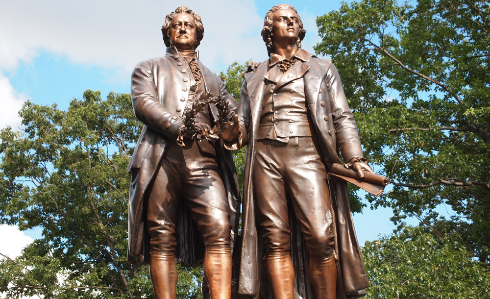
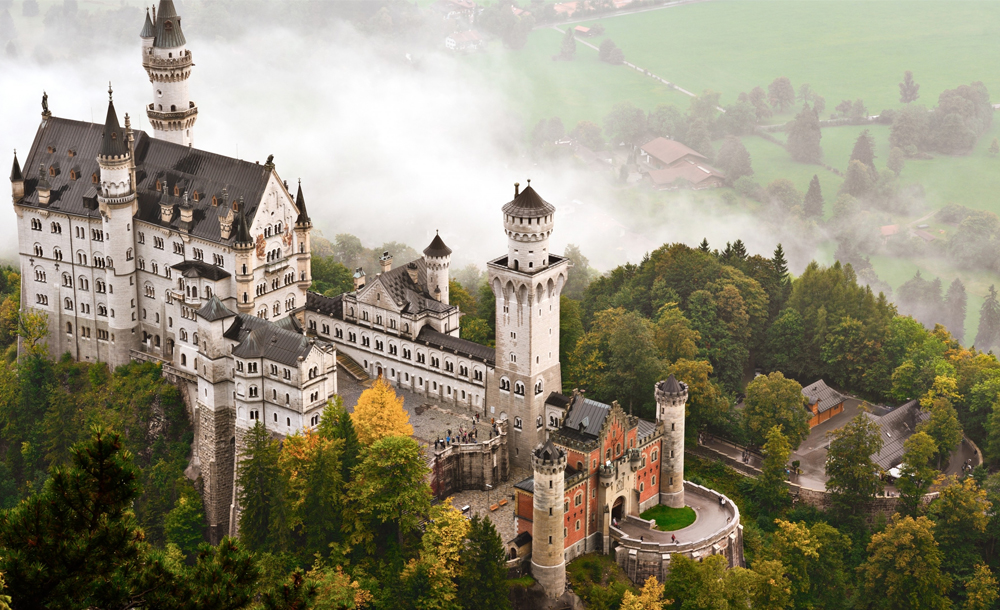

Memorial to the Murdered Jews of Europe : Commemorates the unfortunate loss of six
million Jew lives at the hands of the Nazis.
Luther Monument : It is the world's largest memorial to Reformation.
Goethe-Schiller Monument : Symbolizes the men's friendship and spirit of Weimar since
1857.
Buchenwald Memorial : In 1958, the East German government erected a memorial to
commemorate Communist resistance in the camp.
Karl Marx Monument : In 1953, East Germany renamed Chemnitz as Karl-Marx-Stadt (Karl Marx
City).
Beethoven Monument : The city of Bonn dedicated a bronze statue to its most famous son in
1845.
Hermann Monument : Commemorates Arminius (Hermann), a Germanic war chief, and his victory
over Roman troops in 9 A.D.
Walhalla Hall of Fame : Honors distinguished celebrities in German history.

Memorial to the Murdered Jews of Europe

Luther Monument

Goethe-Schiller Monument

Berlin Cathedral

Buchenwald Memorial

Berliner Dom

Karl Marx Monument

Charlottenburg Palace

Neuschwanstein Castle

Monument to the Battle of the Nations

Niederwald Monument

Reichstag

Walhalla Hall of Fame

Olympia Stadion
Memorial to the Murdered Jews of Europe : Commemorates the unfortunate loss of six
million Jew lives at the hands of the Nazis.
Luther Monument : It is the world's largest memorial to the Reformation.
Goethe-Schiller Monument : Symbolizes the men's friendship and spirit of Weimar since
1857.
Buchenwald Memorial : In 1958, the East German government erected a memorial to
commemorate Communist resistance in the camp.
Karl Marx Monument : In 1953, East Germany renamed Chemnitz as Karl-Marx-Stadt (Karl Marx
City).
Beethoven Monument :The city of Bonn dedicated a bronze statue to its most famous son in
1845.
Hermann Monument : Commemorates Arminius (Hermann), a Germanic war chief, and his victory
over Roman troops in 9 A.D.
Monument to the Battle of the Nations : Dedicated to Napoleon's defeat in the 1813
'Battle of Leipzig'.
Walhalla Hall of Fame : Honors distinguished celebrities in German history with marble
busts and plaques.